- 채널 기본 설정 (통화, 거주 국가)
- 기능 자격 요건 — 중급 기능 활성화 (전화번호 인증)
- 업로드 기본값 설정 (공개 상태, 카테고리)
채널 설정
채널 설정 열기
유튜브 스튜디오에 들어온 뒤 왼쪽 메뉴 하단에 있는 설정을 클릭합니다.
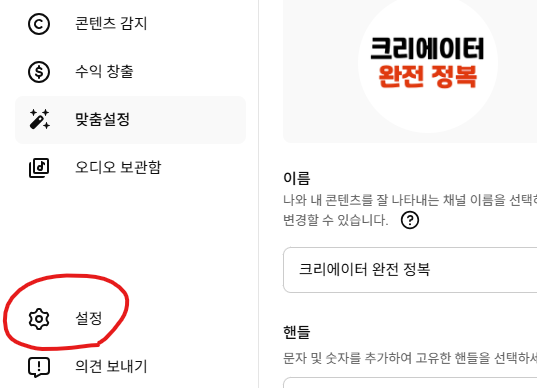
일반 — 통화 설정
설정 창이 열리면 일반 탭에 통화 선택 항목이 보입니다. 수익이 발생했을 때 어떤 통화 단위로 표시할지 정하는 것으로, 실제 지급 방식에는 영향을 주지 않습니다. 보기 편한 통화로 선택하면 됩니다.
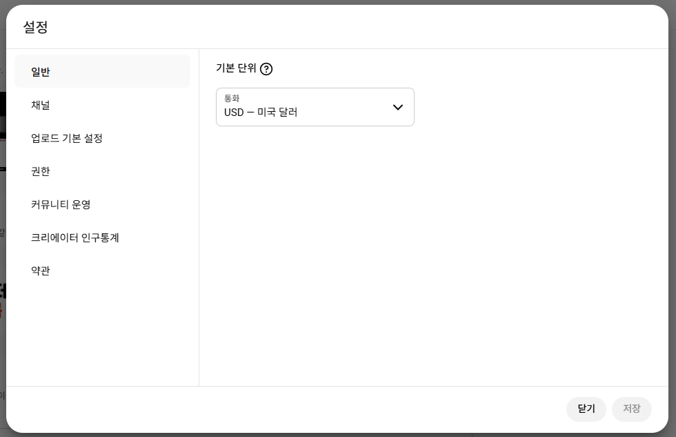
한국에 거주하신다면 KRW — 대한민국 원을 선택하시면 됩니다.
저장을 누르면 설정 창이 닫힙니다. 설정할 항목이 여러 개이니 모두 세팅한 후 마지막에 저장을 누르는 것을 추천합니다.
채널 — 기본 정보 (거주 국가)
왼쪽에서 채널을 클릭하면 기본 정보 탭이 열립니다. 거주 국가를 본인이 사는 국가로 선택합니다.
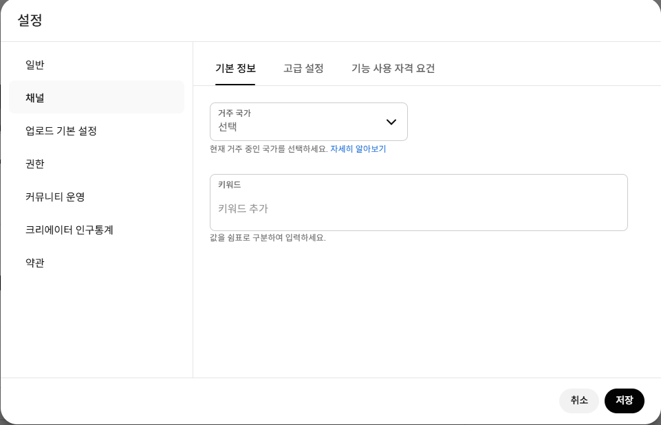
키워드 칸은 지금은 비워두셔도 됩니다. 채널 방향이 잡히면 그때 입력해도 늦지 않습니다.
채널 — 고급 설정 (시청자층)
고급 설정 탭을 클릭하면 시청자층을 설정하는 항목이 나옵니다. "아니요, 아동용 콘텐츠가 아닙니다"를 선택합니다.
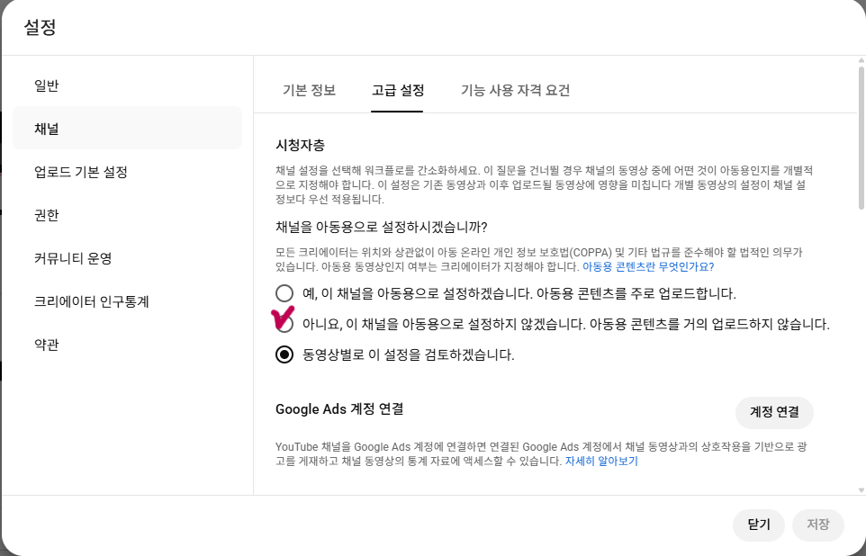
- 댓글 기능 완전 비활성화
- 알림 기능 없음 (구독자에게 알림 전송 불가)
- 개인 맞춤 광고 불가 → 광고 수익 대폭 감소
- 카드, 최종 화면, 저장 목록 기능 사용 불가
아동용 채널을 운영할 계획이 있더라도 위 제약이 많기 때문에 신중하게 결정하세요.
기능 자격 요건 — 중급 기능 활성화
기능 사용 자격 요건 확인
왼쪽에서 기능 사용 자격 요건을 클릭합니다. 표준 기능은 이미 활성화되어 있지만, 중급·고급 기능은 아직 비활성화 상태입니다.
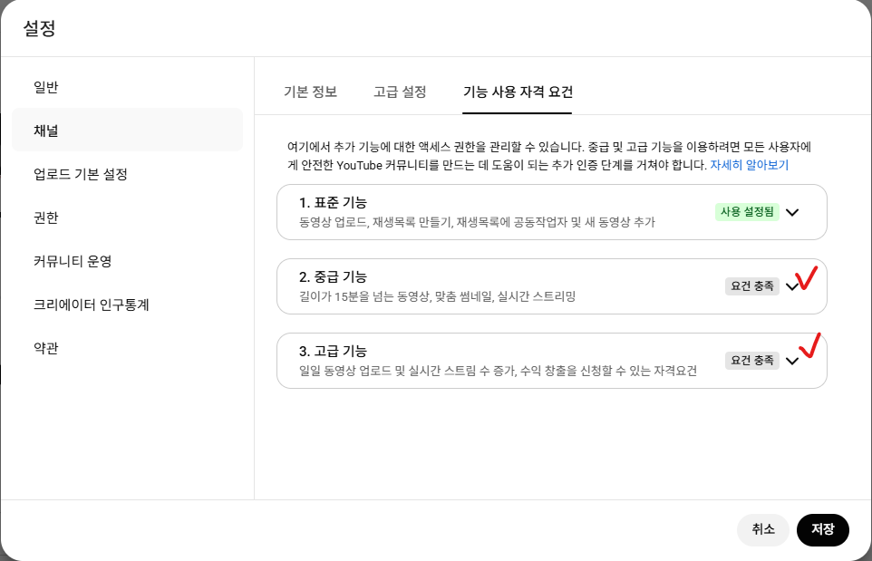
- 15분이 넘는 영상 업로드 가능
- 썸네일 직접 설정 가능
- 실시간 스트리밍 가능
중급 기능 — 전화번호 인증
중급 기능을 클릭하면 전화번호 인증 안내가 나옵니다. 전화번호 인증을 클릭합니다.
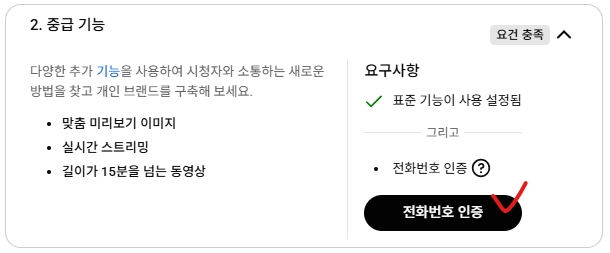
전화번호 입력 & 인증
인증 창이 뜨면 거주 국가와 전화번호를 입력하고 다음을 클릭합니다. 문자로 받은 6자리 인증번호를 입력하면 완료됩니다.
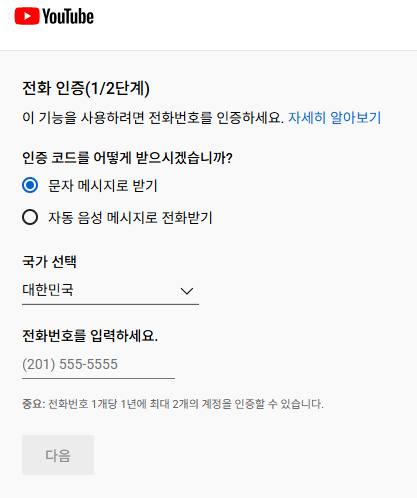
인증 완료
인증이 완료되면 창을 닫고 설정으로 돌아옵니다.
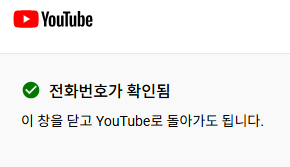
하나의 전화번호로 유튜브 채널 인증을 이미 2개 이상 했다면 아래와 같은 오류 메시지가 뜰 수 있습니다.
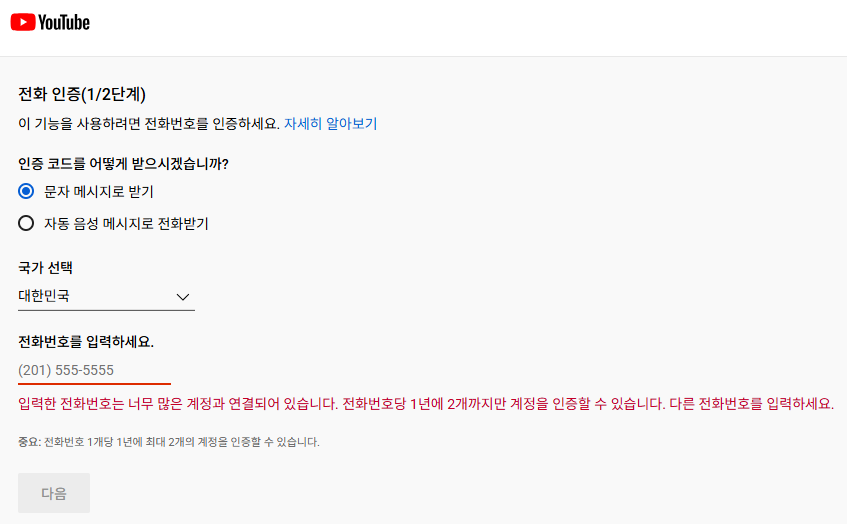
이럴 때는 가족이나 지인의 번호를 빌려 인증해도 됩니다. 전화 인증은 사람인지 확인하는 절차일 뿐, 수익이나 채널 운영에는 전혀 영향을 주지 않습니다.
중급 기능 활성화 확인
설정으로 돌아오면 중급 기능이 사용 설정 됨으로 바뀐 것을 확인할 수 있습니다.
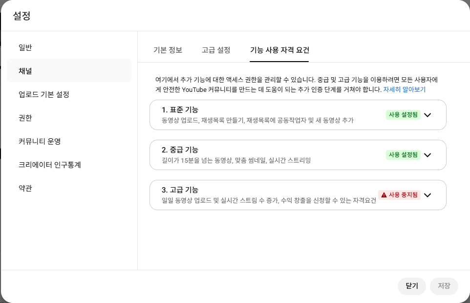
고급 기능이 바로 인증 가능하게 뜨는 분들은 신분증 또는 셀카 영상으로 신원 인증을 하면 활성화됩니다.
"사용 중지됨"으로 뜨는 분들은 아직 인증이 불가능한 상태로, 자연스럽게 해결되거나, 나중에 동영상을 업로드할 때 다시 세팅할 수 있습니다. 지금은 신경 쓰지 않아도 됩니다.
업로드 기본 설정
업로드 기본 설정 — 공개 상태를 비공개로
왼쪽에서 업로드 기본 설정을 클릭합니다. 기본 정보 탭에서 공개 상태를 비공개로 변경합니다.
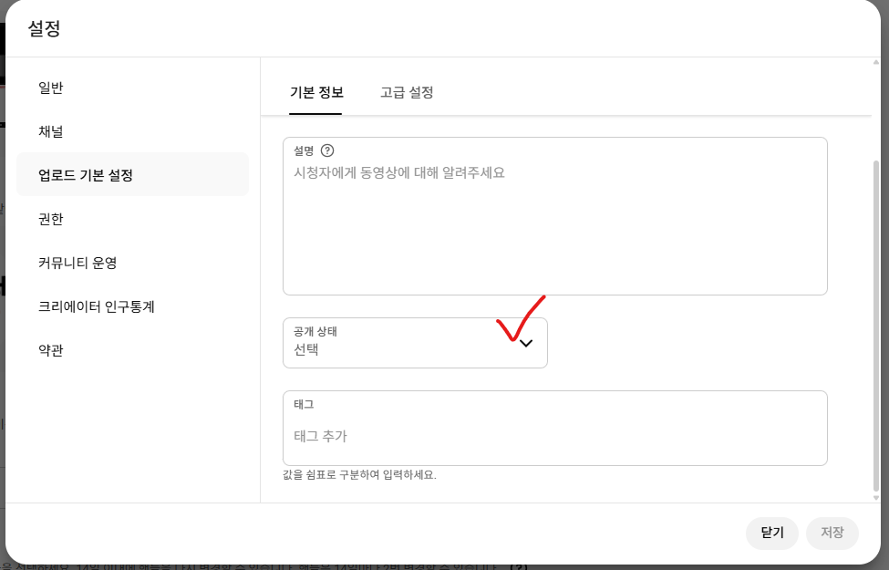
공개로 설정해두면 실수로 미완성 영상을 올렸을 때 그대로 채널에 공개됩니다. 비공개로 기본값을 잡아두면 업로드 후 검토한 다음에 직접 공개로 바꿀 수 있어서 실수를 방지할 수 있습니다.
업로드 기본 설정 — 카테고리 선택
고급 설정 탭을 클릭합니다. 카테고리를 내가 올릴 영상의 주제에 맞게 선택합니다. 카테고리를 설정해두면 유튜브 알고리즘이 내 채널의 영상을 관련 시청자에게 더 잘 추천해줍니다.
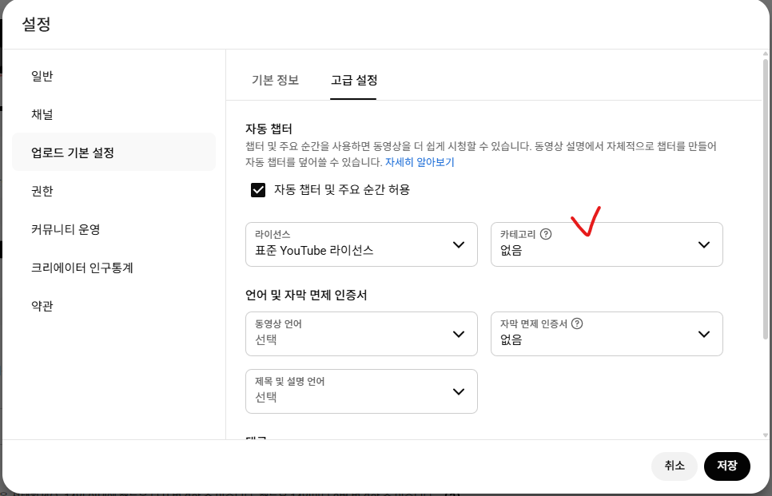
지금 바로 정하지 않아도 됩니다. 나중에 언제든 변경할 수 있으니, 올릴 영상의 방향이 잡히면 그때 설정하세요.
저장
권한, 커뮤니티 운영, 크리에이터 인구통계, 약관 항목은 지금 건드릴 필요가 없습니다. 오른쪽 하단의 저장을 클릭해서 모든 설정을 저장합니다.
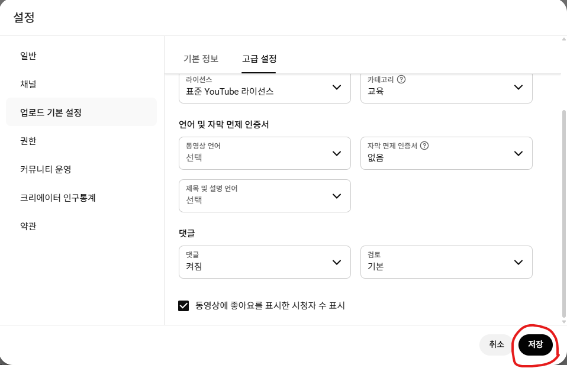